La ambición de esta serie de tutoriales siendo de ensenar como torcer globos a novatos, mi di cuenta que al principio, muchos de vosotros, niños o adultos, os costaba hacer los nudos de globos.
La técnica utilizada en este tutorial permite de evitar toda fricción de globo contra la piel de los dedos. Es un detalle que puede parecer anodino pero toma todo su significado cuando efectuamos cientos de nudos a seguir. Eso es lo que os pasara en cuanto su notoriedad de doblador de globos sobrepasara el marco de vuestra familia, de vuestro barrio o incluso de vuestra región. Es por eso que deberíais aprender buenos hábitos desde el inicio.
Intentad ir despacio y de forma continua hasta que conseguíais imprimir perfectamente esta secuencia de movimientos en su memoria gestual y hacerlo rápidamente sin siquiera pensarlo.
¡Pasadlo bien... y practicad regularmente!
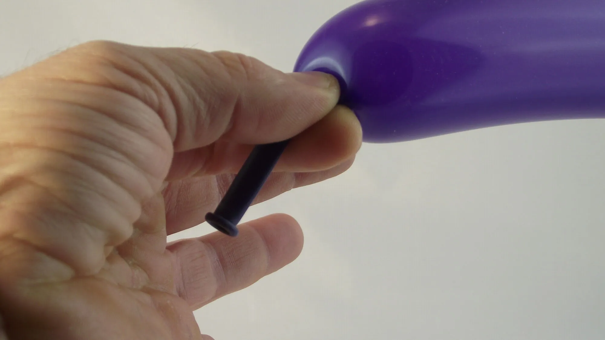1- Inflar un globo dejando al máximo de margen posible después de la boca del globo que debe dirigirse hacia la palma, que tiene que haceros frente. 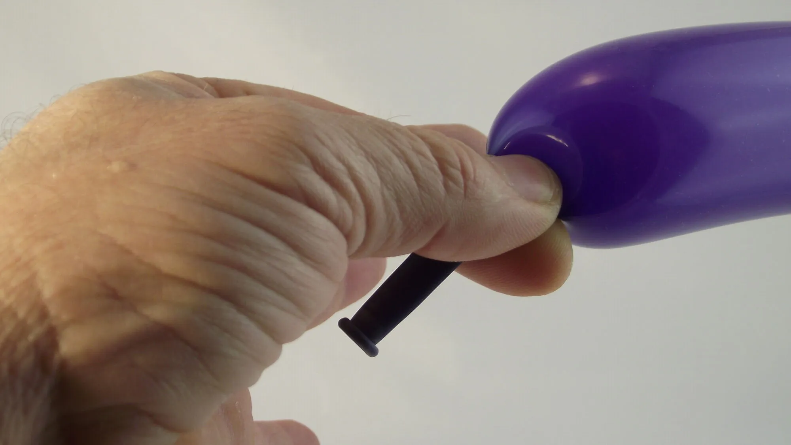2- El pulgar y el indice pinchan el globo e impiden que el aire se escapa. Girad poco a poco su mano... 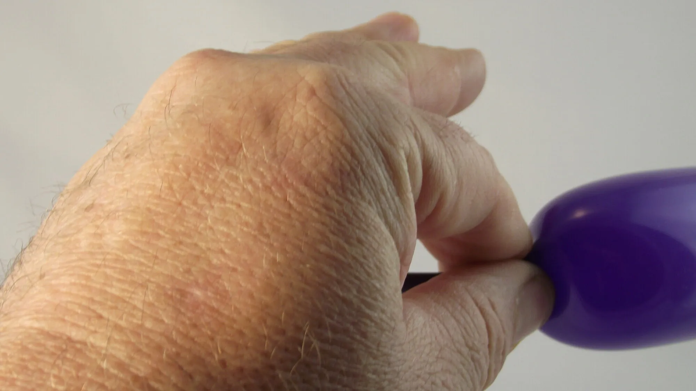3- Aun un poquito más...no se debe ver la palma.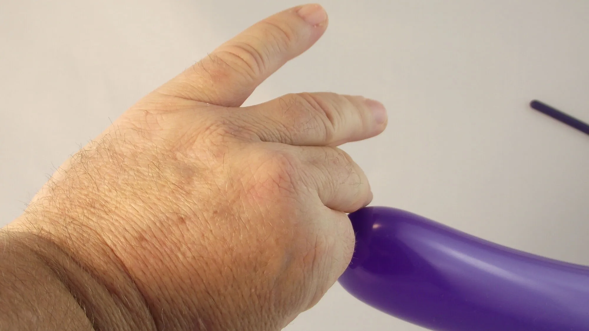4- Una vez que vuestra mano está totalmente vuelta hacia al exterior…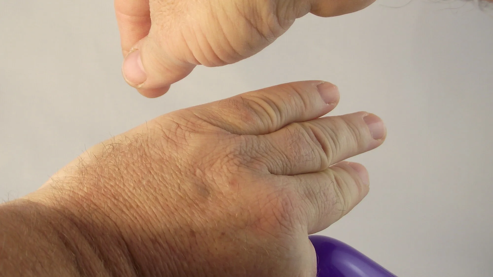5- Pasar la otra mano por encima para coger la boca del globo.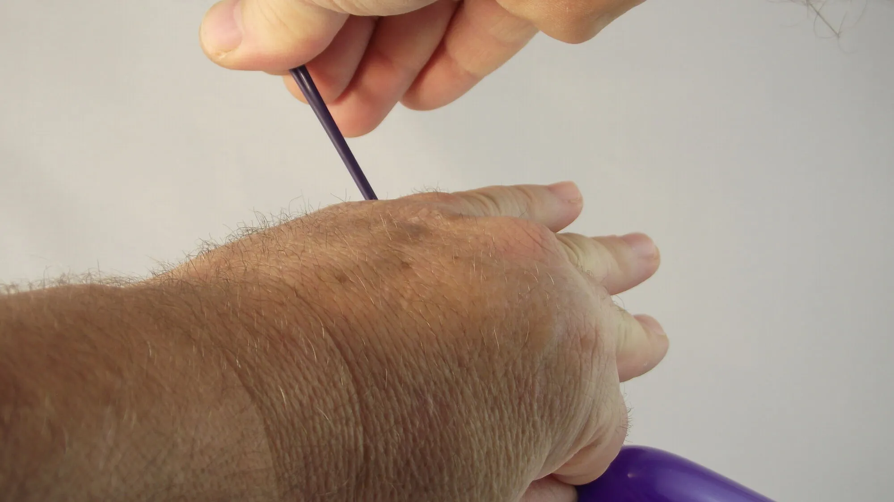6- Tirar en la boca del globo y formar así un gran longitud de globo...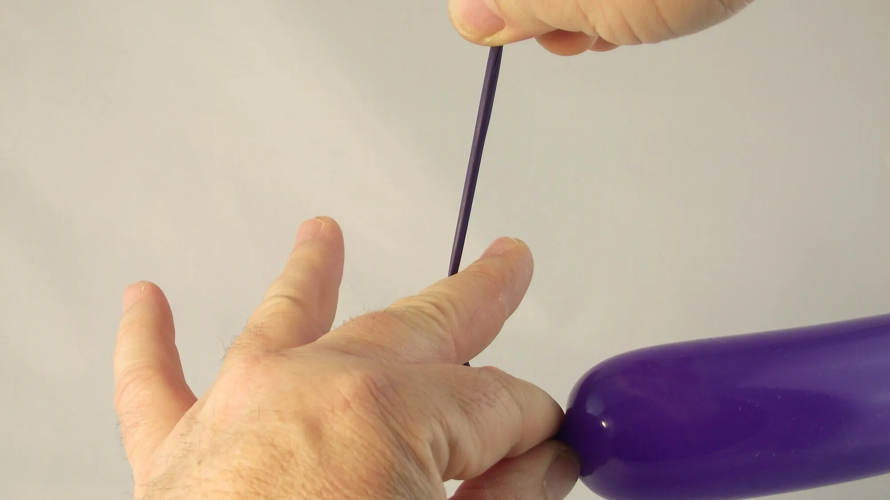7- Apartar los dedos mientras volviendo la palma de nuevo hacia vosotros.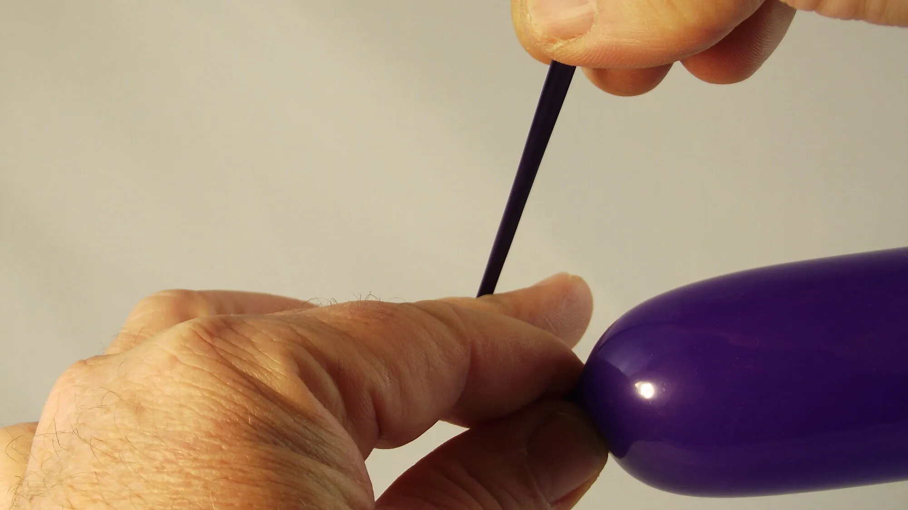8- Pasar el largo red de globo justo atrás del dedo medio...9- Acabar de dar la vuelta a vuestra mano para que vuestra palma sea de nuevo completamente enfrente de vosotros. 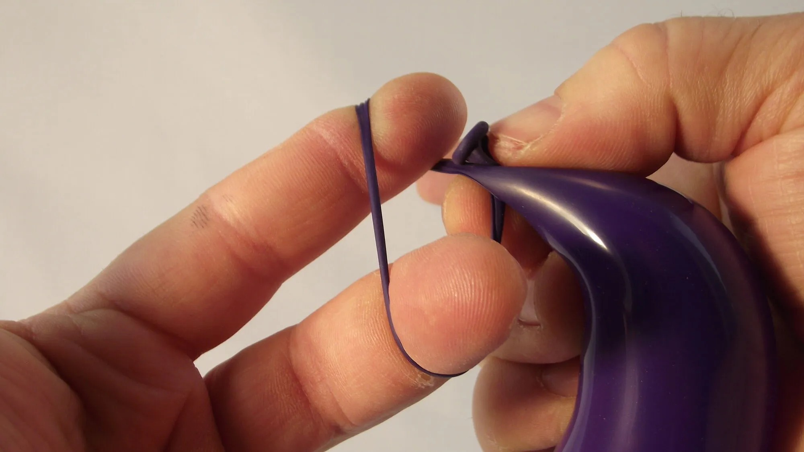10- Formar un bucle alrededor del indice y del dedo medio posicionando la boca del globo justo detrás de la base de la parte inflada del globo.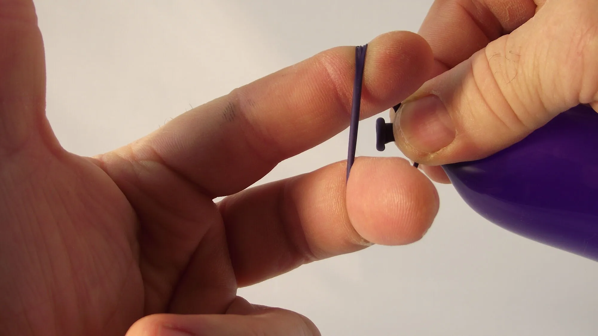11- Luego hacer pasar la boca del globo al centro del bucle.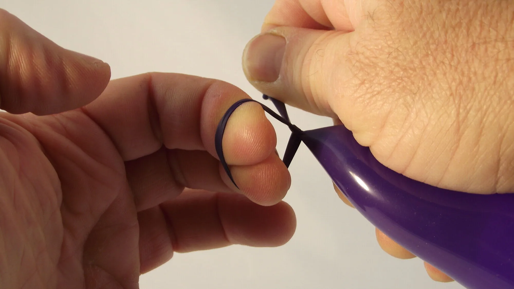12- Una vez que la boca del globo ha pasado a través del bucle, cogedla con el pulgar y el indice.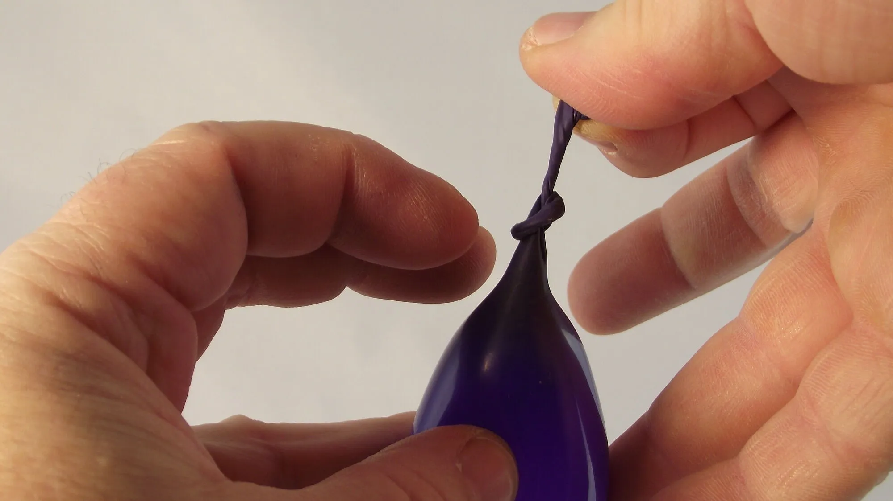13- Liberar los dos dedos del bucle para que el nudo pueda cerrarse totalmente en si-mismo. Aprovechar para pasar el globo en la otra mano...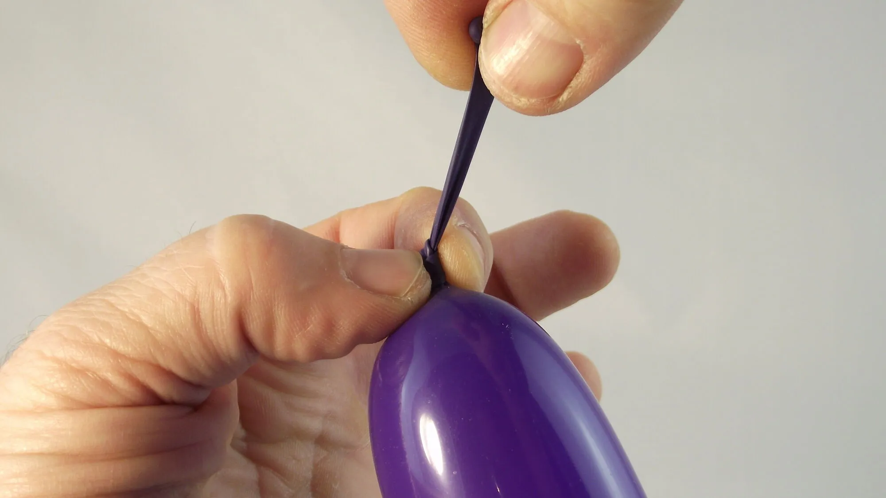14- para poder tirar correctamente en el nudo.15- ¡Ya está! ¡Hasta pronto! Para otra lección... ¡Con Môssieur Ballon!